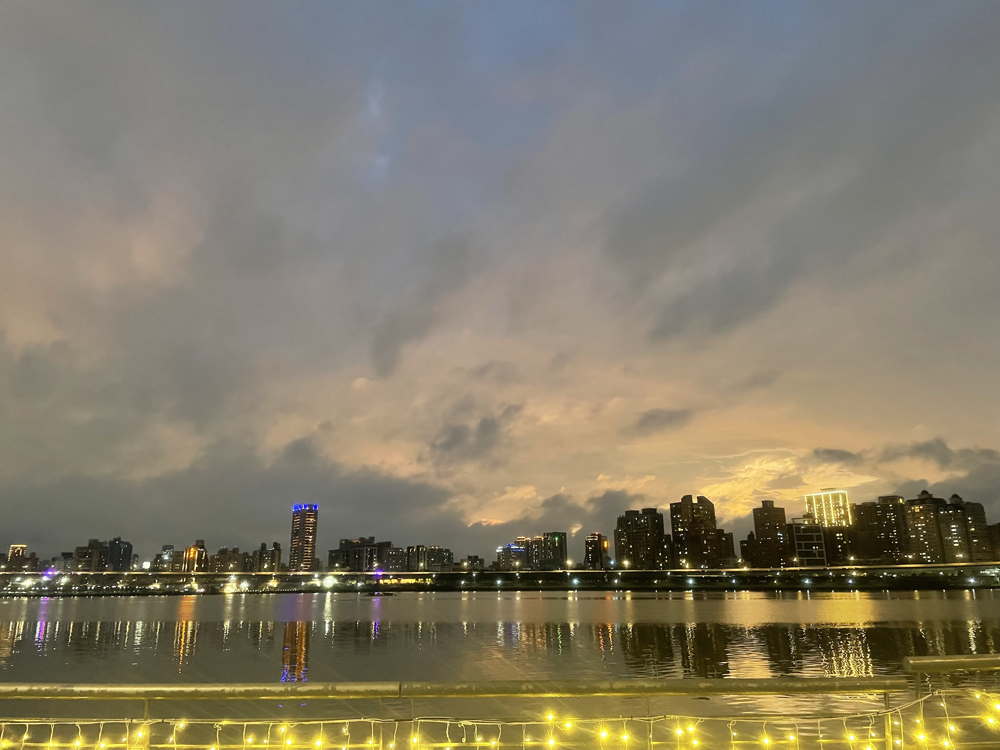
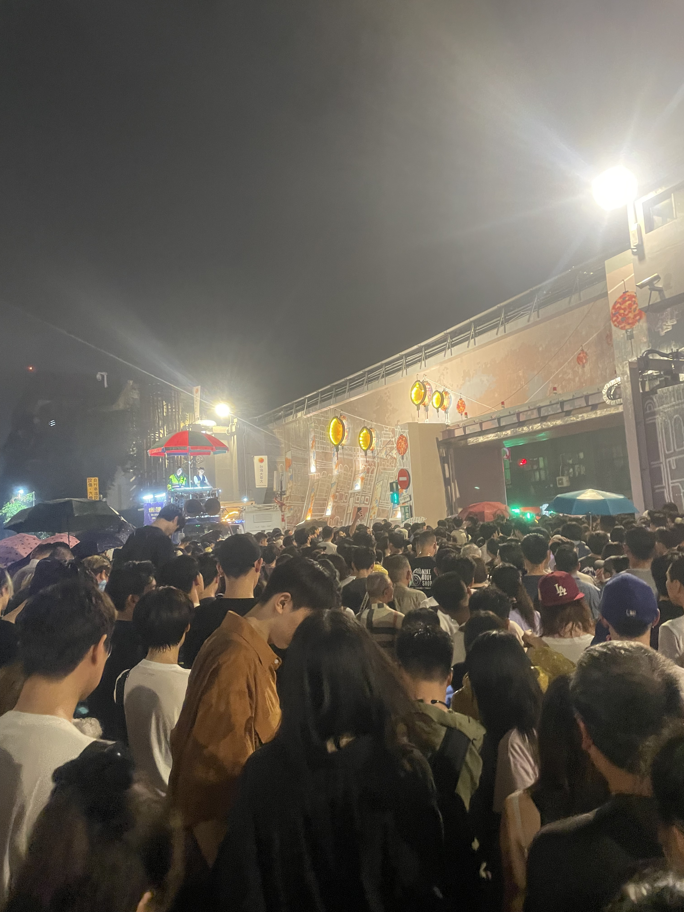
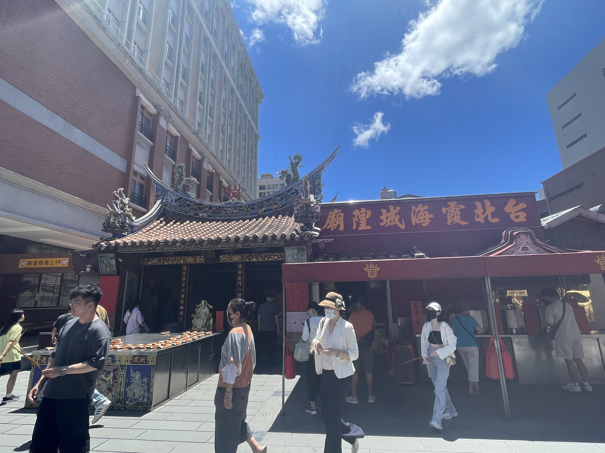

台北市大同區
基本資訊
位於台北市西北側，是台北最早發展的核心區域之一，歷史脈絡深厚，至今仍保有濃厚的商業與生活氣息。早期因河運與貿易而興盛，逐漸形成以批發市場、傳統產業與老街聚落為主的城市樣貌，奠定其在台北城市發展中的重要地位。 區內街區尺度緊密，老屋、商行與市場交織，呈現高度生活化的城市風景。迪化街一帶延續百年商業機能，南北貨、中藥行與傳統產業林立，使大同區成為連結歷史與當代經濟的重要節點。同時，近年也透過老屋再利用與文創進駐，逐步為老城注入新的活力。
推薦景點
| 迪化街
是台北歷史最悠久的商業街道之一，也是城市早期貿易發展的重要核心。街道形成於清代，隨著淡水河河運興盛，逐漸發展為南北貨、中藥材與布料買賣的集散地，奠定其長久的商業地位。 街區內保留大量清末與日治時期的街屋建築，立面多為紅磚、巴洛克風格或傳統閩南式設計，形成連續且具特色的街景。行走其間，可以清楚感受到老城的尺度與節奏，歷史痕跡深深嵌入建築與街道之中。 近年來，迪化街在保留傳統商業機能的同時，逐漸引入文創空間、咖啡店與展覽活動，讓老街在節慶與日常之間展現新的活力。整體而言，迪化街不只是購物街道，更是一條能理解台北商業歷史與城市記憶的重要文化廊道。
| 大稻埕碼頭廣場
位於淡水河畔，是台北早期對外貿易與河運活動的重要節點，與迪化街共同構成大稻埕商業發展的核心區域。清代以來，各式貨物透過河運在此集散，使大稻埕成為當時台北最繁盛的商業重鎮之一。 隨著河運功能式微，碼頭轉型為市民休憩與觀光空間，保留開闊的河岸視野與親水步道。傍晚時分，淡水河夕照映照河面，成為許多遊客與在地居民散步、騎行與拍照的熱門地點。 目前的大稻埕碼頭也結合市集、展演與節慶活動，讓歷史場域融入當代生活。整體而言，這裡不僅承載台北河港發展的記憶，也展現城市從商業運輸走向文化與生活空間的轉變。



